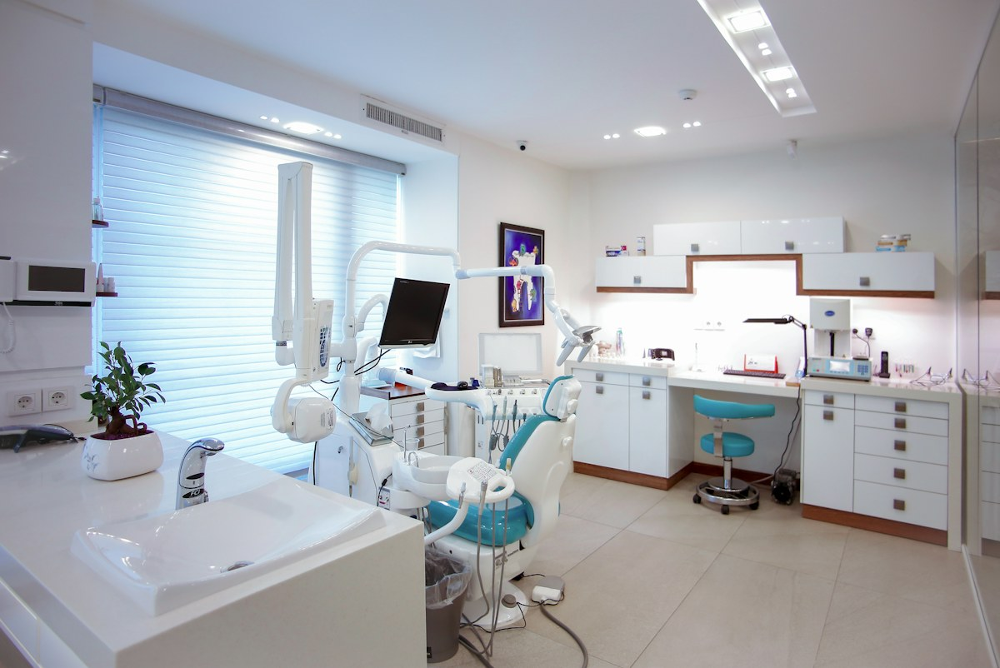

일반 진료
치아 상태를 확인하고 필요한 진료를 상담합니다.
처음 방문하시는 분도 차근차근 안내합니다.
진료 항목과 방문 정보를 미리 확인해 보세요.

OUR CARE
치아 상태를 확인하고 필요한 진료를 상담합니다.
치아의 상태에 따라 진료 과정을 안내합니다.
관리와 정기 검진에 관한 내용을 상담합니다.
보호자와 함께 방문 준비 사항을 확인합니다.
OPENING HOURS
VISIT US
역세권 위치와 주차 안내를 표시하는 영역입니다.
실제 병원이나 위치를 안내하는 페이지가 아닙니다.